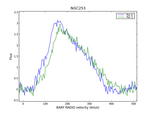

ASAP Homepage

Introduction
The ATNF Spectral Analysis Package is a new
software package to reduce single-dish, single-pointing spectral
line observations. At this stage it is tuned towards data from
ATNF instruments and reads/writes rpfits, sdfits and ms data.
more...
Current Release
ASAP latest stable version 2.2 was released on May, 2nd 2007. It can be obtained in the Download section.
Note: Due to a bug in this release, Mopra users should follow
these instructions.
Screenshots
Here are some example plots.
How to run
To get started, simply type "asap" at the *nix command line prompt.
Loading ASAP...
Welcome to ASAP v2.2.x (release date) - the ATNF Spectral Analysis Package
Please report any bugs via:
http://svn.atnf.csiro.au/trac/asap/newticket
[IMPORTANT: ASAP is 0-based]
Type commands() to get a list of all available ASAP commands.
ASAP>
Defects and enhancement requests
Bugs and enhancement requests can be submitted online, via the
ASAP project tracking page. Please also check if the defect has already been submitted under
current tickets.
If the trac system tells you that your submission has been considered spam, please log in with the username "bugs" and password "mops".
Documentation
ASAP has a user guide for general use and telescope specific examples,
and a reference manual for people who want to write scripts to reduce
and analyse their data.
More detailed help is available via the help function.
The Trac page
for ASAP also contains information about building from source and some more detailed information. It also shows information regarding release dates and milestones.
ASAP Mailinglist
There is an asap mailing list asap-users@atnf.csiro.au for users of
asap. This list will be used to announce updates to the code and allow
general user discussion (please send bug and feature requests to
asap@atnf.csiro.au). Messages sent to this list are archived at
http://www.atnf.csiro.au/lists/asap-users
You need to be suscribed to send and receive messages from this
list. To subscribe, please send a message to
asap-users-request@atnf.csiro.au
with the single word
"subscribe" in the body of the message. Send this from your normal
email account. If you wish to be removed from this list send an email
to asap-users-request@atnf.csiro.au with the single word
"unsubscribe" in the body of the message.
Download
ASAP binaries are available in the ATNF ftp area
Please also consult the wiki
Important
ASAP is 0-based, i.e. all ranges (vectors) go from
0..n-1, if n is the number of elements.